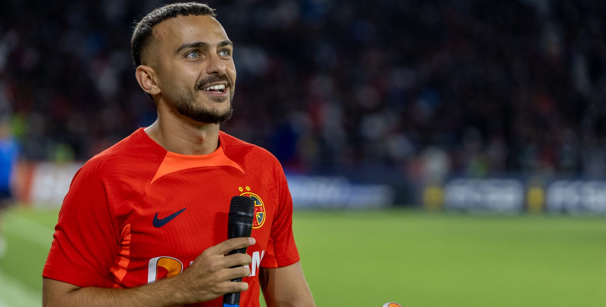
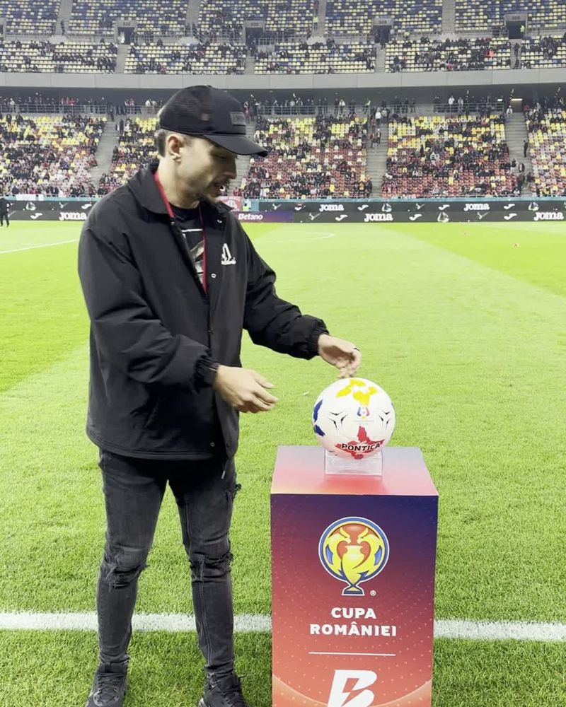
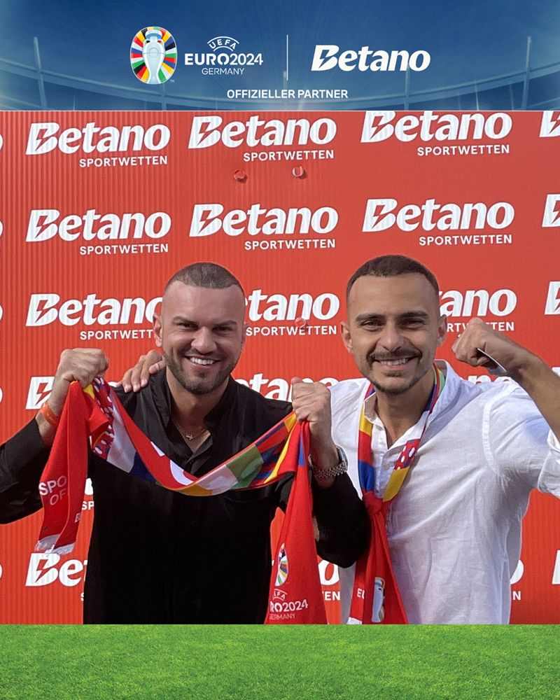
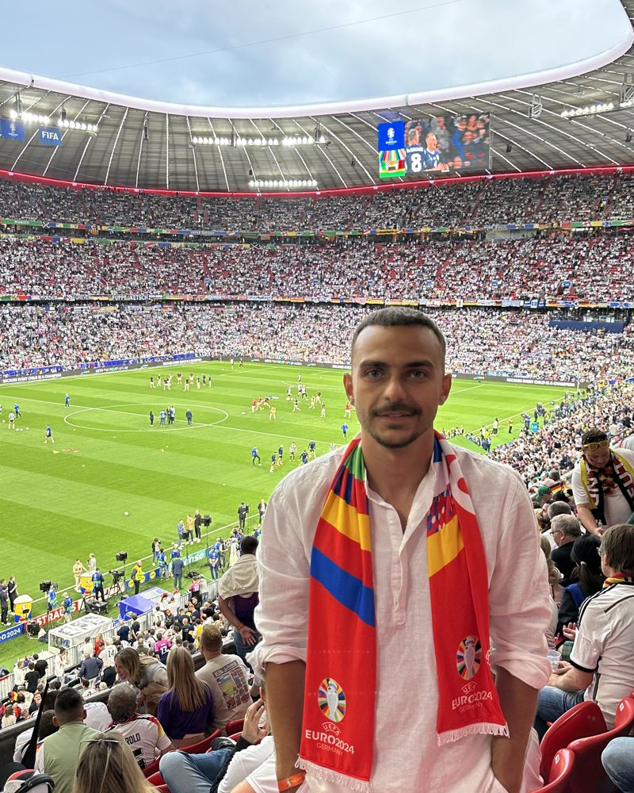
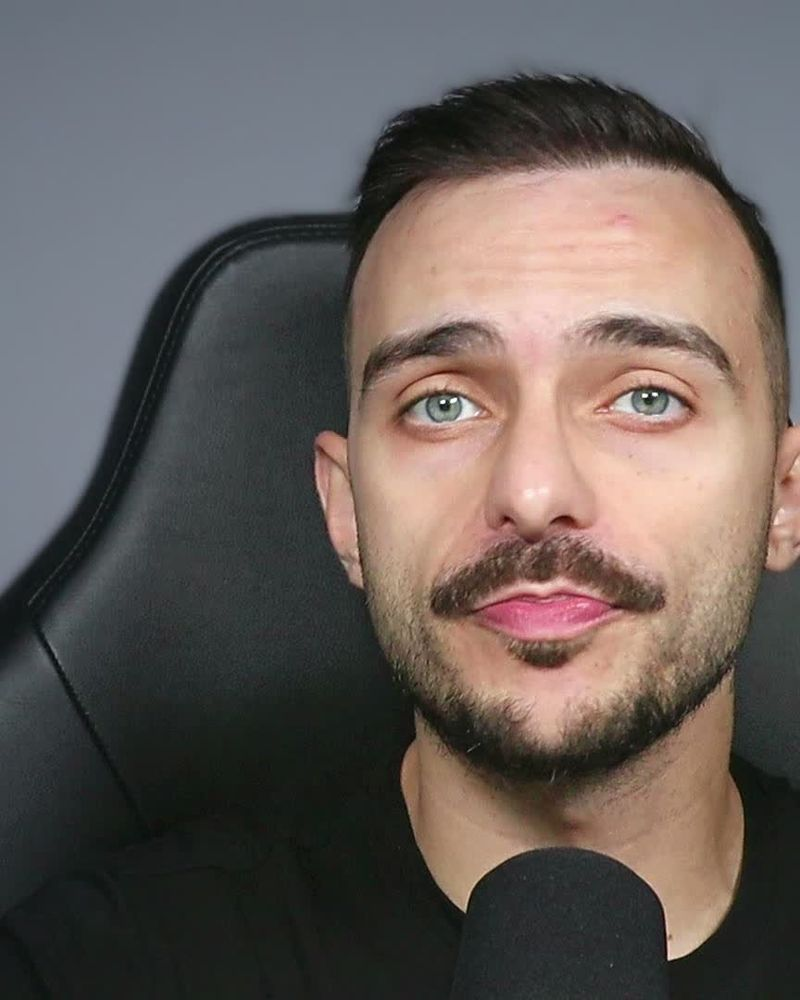
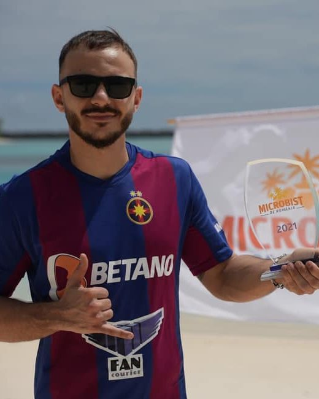
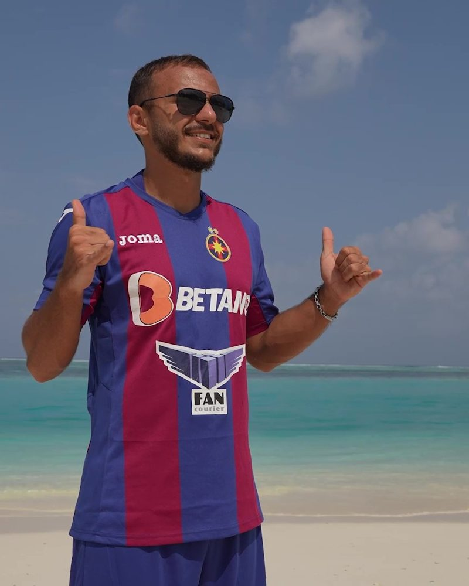
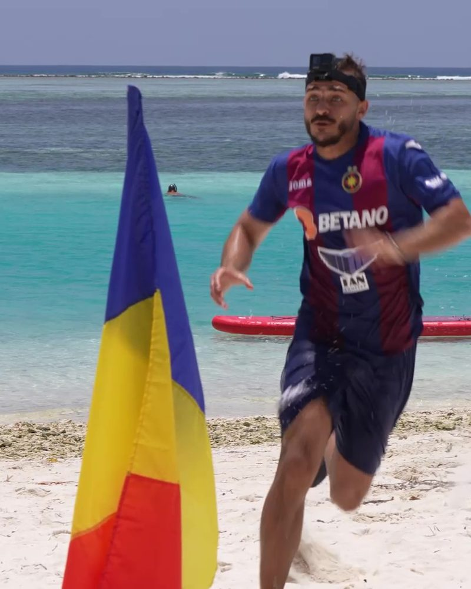
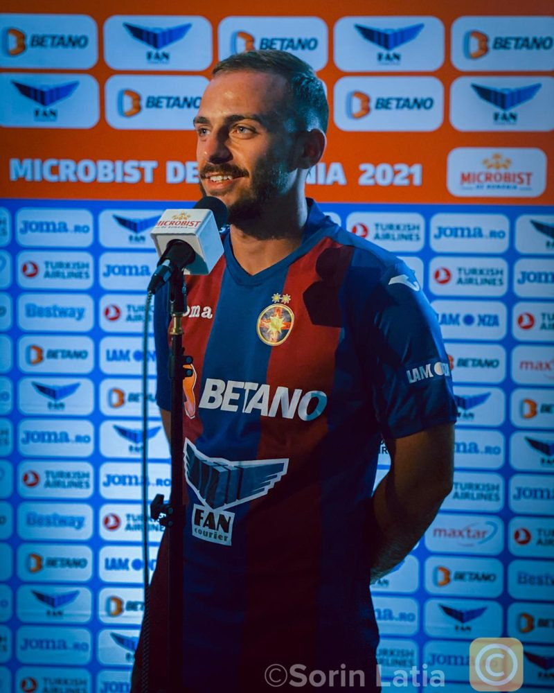

Hai să vedem dacă drumurile noastre se pot intersecta.Let's see if our paths can cross.
Brandul tău are ceva de spus. Eu îl transform în conținut video pe care oamenii îl urmăresc până la final: 48 de materiale pe lună, pentru 4 platforme.Your brand has something to say. I turn it into video people watch to the very end: 48 pieces a month, for 4 platforms.

Oamenii dau scroll peste reclame.
Se opresc la povești.People scroll past ads.
They stop for stories.
Ai nevoie de conținut constant, care arată bine și chiar e urmărit. Să-l produci intern înseamnă timp, o echipă și luni de încercări.You need steady content that looks good and actually gets watched. Producing it in-house takes time, a team and months of trial and error.
48 de materiale.
Pe 4 platforme. Lunar.48 pieces.
On 4 platforms. Monthly.
12 clipuri originale, fiecare livrat nativ pentru YouTube, TikTok, Instagram și Facebook.12 original videos, each delivered natively for YouTube, TikTok, Instagram and Facebook.
12 clipuri native12 native videos
3 pe săptămână, fiecare în 4 variante: una pentru fiecare platformă. În total, 48 de materiale.3 a week, each in 4 versions, one per platform. 48 pieces in total.
Gata de publicareReady to publish
Primești fișierele finale, cu formatul, durata și textul potrivite fiecărei platforme.You receive final files with the right format, length and copy for each platform.
De la idee la montajFrom idea to final cut
Strategie, scenariu, filmare, montaj, subtitrare și sunet.Strategy, script, filming, editing, captions and sound.
- 1Discutăm despre brandul tău.We talk about your brand.Ce vinzi, cui și ce vrei să rămână în mintea oamenilor.What you sell, to whom, and what people should remember.
- 2Primești planul seriei.You get the series plan.Subiectele lunii, formatul și calendarul, aprobate de tine înainte de filmare.The month's topics, format and calendar, approved by you before filming.
- 3Primești materialele, săptămână de săptămână.You get the videos, week after week.Trei clipuri pe săptămână, fiecare în varianta pentru fiecare platformă.Three videos a week, each in a version for every platform.
Am testat pe canalele mele.
Tu primești doar ce funcționează.I tested on my own channels.
You get only what works.
Șapte ani, peste 3.400 de materiale și peste 40 de milioane de vizualizări. Specializat în ambele formate: long form și short form. Fiecare cifră de mai jos e publică.Seven years, 3,400+ pieces and 40+ million views. Specialised in both formats: long form and short form. Every number below is public.
YouTube
47.400 abonați · 11,1 mil. vizualizări47,400 subscribers · 11.1M views
TikTok
29.587 urmăritori · 29,1 mil. vizualizări29,587 followers · 29.1M views
21.091 urmăritori21,091 followers
18.000+ urmăritori18,000+ followers
Vizualizări pe an, YouTube și TikTok împreunăViews per year, YouTube and TikTok combined
De la 1,2 milioane în 2019 la 12,1 milioane în 2025. De zece ori mai mult.From 1.2 million in 2019 to 12.1 million in 2025. Ten times more.
* 2026: până la 7 noiembrie. Instagram și Facebook nu publică vizualizările pe ani, deci nu sunt incluse.* 2026: through 7 November. Instagram and Facebook don't publish yearly views, so they are not included.
Vezi tabelulShow the table
| AnYear | YouTube | TikTok | Total |
|---|
Cifre publice, actualizate automat în fiecare zi. Ultima actualizare: 8 noiembrie 2026.Public figures, updated automatically every day. Last update: 8 November 2026.
Branduri mari.
Emisiuni naționale.Big brands.
National shows.
Betano
materiale video pentru unul dintre cei mai mari operatori de iGaming din lume, activ în 20 de piețe reglementate, pe 4 continente. Și 4 ani ca host al concursului pentru fani din pauzele meciurilor FCSB, pe Arena Națională, în fața a zeci de mii de oameni, într-o atmosferă incendiară.videos for one of the world's largest iGaming operators, active in 20 regulated markets on 4 continents. And 4 years hosting the fan contest at FCSB half-times, at the National Arena, in front of tens of thousands of fans, in an electric atmosphere.
ClientClient888
Seria de la Campionatul Mondial 2026, „Powered by 888”: cinci episoade livrate în 11 zile.The 2026 World Cup series, “Powered by 888”: five episodes delivered in 11 days.
TeleviziuneTelevisionTVR 1
Reprezentantul FCSB, cea mai iubită echipă din România (1 din 3 români, INSCOP 2024), în emisiunea „Microbist de România”.FCSB's representative, Romania's most supported club (1 in 3 Romanians, INSCOP 2024), on the show “Microbist de România”.
Emisiune sportivăSports showProSport
Invitat în studio la „EXCLUSIV FCSB”, alături de Alin Grigore și Robert Panduru.Studio guest on “EXCLUSIV FCSB”, alongside Alin Grigore and Robert Panduru.
Agenție de talenteTalent agencyGlobal Talent United
Recrutat în 2024 de agenția de talente a grupului Global Records, primul din programul Influencer Accelerator.Signed in 2024 by the Global Records group's talent agency, the first from the Influencer Accelerator programme.
FormareTrainingMOCAPP · Florin Grozea
Absolvent al Influencer Accelerator, programul lui Florin Grozea: 80 de ore de mentorat cu profesioniști din publicitate și social media.Graduate of Florin Grozea's Influencer Accelerator: 80 hours of mentoring with advertising and social media professionals.
Emisiune onlineOnline showTheo Extra · Pase Pase Gol
Invitat permanent: 12 episoade, peste 350.000 de vizualizări.Regular guest: 12 episodes, 350,000+ views.
Acolo unde se întâmplă.Where it happens.




Fața FCSB
la televiziunea națională.The face of FCSB
on national television.
Am reprezentat cea mai iubită echipă din România într-un show TVR 1 filmat în Maldive, cu 13 episoade. Am terminat pe locul 5.I represented Romania's most supported club in a 13-episode TVR 1 show filmed in the Maldives, finishing 5th.




Formate testate
pe milioane de oameni.Formats tested
on millions of people.
Reportaj la fața loculuiOn-location reporting
Filmez acolo unde se întâmplă: la stadion, la eveniment, la lansare. Publicul vede ce nu prinde televizorul.I film where it happens: at the stadium, the event, the launch. The audience sees what TV misses.
Până la 521.800 de vizualizări pe materialUp to 521,800 views per videoPovești cu date verificateFact-checked stories
Un subiect, o idee clară, fiecare cifră cu sursă. Formatul care ține oamenii până la final.One topic, one clear idea, every figure sourced. The format that keeps people watching to the end.
Un singur material: 799.000 de vizualizăriOne video: 799,000 viewsConcepte originaleOriginal concepts
Întrebări pe care nu le pune nimeni, cu răspunsuri pe care le vrea toată lumea.Questions nobody asks, with answers everyone wants.
161.691 de vizualizări pentru un singur concept161,691 views for a single conceptTransmisiuni liveLive streams
Comunitatea urmărește evenimentul în timp real, alături de brand.The community follows the event in real time, alongside the brand.
43 de transmisiuni realizate43 streams producedCele mai mari realizări,
pe YouTube și TikTok.The biggest results,
on YouTube and TikTok.
Clasamente reale, cu link la fiecare material. Apasă oricare ca să-l vezi.Real rankings, with a link to every video. Tap any to watch it.
YouTube
47.400 abonați · 1.347 materiale · 11,6 mil. vizualizări · long form și short form, din 201947,400 subscribers · 1,347 videos · 11.6M views · long and short form, since 2019
- 1Seară de Nations League pe Arena Națională: România – KosovoNations League night at the National Arena: Romania vs Kosovo16.11.2024 · Short formShort form185.863185,863vizualizăriviews
- 2Cu câte secunde e în urmă televizorul față de stadion?How many seconds is TV behind the stadium?06.10.2023 · Short formShort form161.691161,691vizualizăriviews
- 3România – Spania 1-2: atmosfera de pe stadionRomania vs Spain 1-2: the atmosphere in the stadium06.09.2019 · Long formLong form121.383121,383vizualizăriviews
- 4FCSB – Dinamo 6-0, trăit din tribunăFCSB vs Dinamo 6-0, lived from the stands12.09.2021 · Long formLong form116.671116,671vizualizăriviews
- 5Dinamo – FCSB 2-1: spectacolul din peluzeDinamo vs FCSB 2-1: the show in the stands17.02.2020 · Long formLong form105.165105,165vizualizăriviews
- 6Ce jucători uriași puteau ajunge în România, dar au fost refuzați?Which huge players could have come to Romania but were turned down?16.10.2026 · Short formShort form103.831103,831vizualizăriviews
- 7CFR Cluj – Sevilla: golul și penalty-ul dat de VARCFR Cluj vs Sevilla: the goal and the VAR penalty20.02.2020 · Long formLong form94.04594,045vizualizăriviews
- 8FCSB – U Craiova 3-2, play-off: din peluzăFCSB vs U Craiova 3-2, play-off: from the stands01.04.2019 · Long formLong form79.79179,791vizualizăriviews
TikTok
29.587 urmăritori · 984 materiale · 29,1 mil. vizualizări · 60 de clipuri peste 100.00029,587 followers · 984 videos · 29.1M views · 60 videos above 100,000
- 1Știai că mingea oficială de la Mondial trebuie încărcată ca un telefon?Did you know the official World Cup ball has to be charged like a phone?05.06.2026 · Short formShort form799.000799,000vizualizăriviews
- 2„Aduceți-ne echipe să jucăm!” Gigi Becali, în mijlocul fanilor“Bring us teams to play!” Gigi Becali among the fans17.05.2025 · Short formShort form521.800521,800vizualizăriviews
- 3Darius Olaru aduce nebunia în Ghencea și FCSB în Europa LeagueDarius Olaru sets Ghencea alight and sends FCSB to the Europa League29.08.2024 · Short formShort form488.600488,600vizualizăriviews
- 4Cum se salută steliștii de acum încoloHow FCSB fans greet each other from now on29.05.2022 · Short formShort form471.100471,100vizualizăriviews
- 5Barcelona – Real Madrid: „Oleee, oleee”Barcelona vs Real Madrid: “Oleee, oleee”03.03.2023 · Short formShort form427.300427,300vizualizăriviews
- 6Olanda – Franța: golul Olandei, anulat de VARNetherlands vs France: the Dutch goal ruled out by VAR22.06.2024 · Short formShort form415.000415,000vizualizăriviews
- 7Golul lui Bîrligea, trăit din tribunăBîrligea's goal, lived from the stands26.09.2024 · Short formShort form400.900400,900vizualizăriviews
- 8Camora primește roșu în Conference LeagueCamora sent off in the Conference League16.09.2021 · Short formShort form383.600383,600vizualizăriviews
Șapte ani.
De la tribună la studio.Seven years.
From the stands to the studio.
- 2019Long form pe YouTube: reportaje de la stadion.Long form on YouTube: stadium reporting.Materiale de 15–40 de minute. Astăzi, 47.400 de abonați.15–40 minute pieces. Today, 47,400 subscribers.
- 2021Televiziune națională, pe TVR 1.National television, on TVR 1.Reprezentantul FCSB în „Microbist de România”.FCSB's representative on “Microbist de România”.
- 2022Începe colaborarea cu Betano.Partnership with Betano begins.Peste 500 de materiale video până astăzi.Over 500 videos to date.
- 2023Short form pe TikTok, Reels și Shorts.Short form on TikTok, Reels and Shorts.162 de clipuri în primul an și 4 milioane de vizualizări doar pe TikTok.162 videos in the first year and 4 million views on TikTok alone.
- 4 aniHost pe Arena Națională.Host at the National Arena.Concursul pentru fani din pauzele meciurilor FCSB, pentru Betano, într-o atmosferă incendiară.The fan contest at FCSB half-times, for Betano, in an electric atmosphere.
- 2024Recrutat de Global Talent United.Signed by Global Talent United.Absolvent al Influencer Accelerator, programul lui Florin Grozea.Graduate of Florin Grozea's Influencer Accelerator.
- 20259,8 milioane de vizualizări într-un an.9.8 million views in one year.Doar pe TikTok, din 329 de materiale.On TikTok alone, from 329 videos.
- 2026Seria 888 de la Mondial și invitat la ProSport.The 888 World Cup series and a ProSport studio guest spot.Astăzi produc conținut video pentru branduri, prin VIP Networking 2024.Today I produce video content for brands, through VIP Networking 2024.
Hai să vorbim.Let's talk.
În fiecare săptămână fără conținut, altcineva îți ia atenția clienților. Spune-mi ce brand ai și revin cu o propunere concretă.Every week without content, someone else takes your customers' attention. Tell me about your brand and I'll come back with a concrete proposal.
Mulțumesc, .Thank you, .
Am primit cererea pentru . Revin în curând cu o propunere, pe emailul tău.I received the request for . I'll get back to you soon with a proposal, by email.